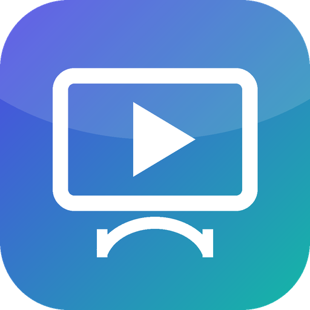

Телевизор, видео и фильмы — на любом устройстве
Телеканалы России и Беларуси с программой передач, тренды YouTube, каталог фильмов с трейлерами. Бесплатно, без рекламы и регистрации, с открытым кодом. Работает даже на старом iPad.
Открыть в браузере
Скачать
Windows 10 / 11
Программа для ПК: все каналы, программа передач, фильмы.
Установщик Без установкиПока без цифровой подписи: Windows может предупредить — «Подробнее» → «Выполнить в любом случае».
Android, Android TV
Телефоны, планшеты, приставки и телевизоры, Android 4.4 и новее. Голосовой поиск с пульта.
Скачать APKОткройте файл; если спросит — разрешите установку из этого источника.
iPhone, iPad
Проще всего: «Открыть в браузере» → «Поделиться» → «На экран Домой». Работает на любой iOS, даже 9.
Открыть в Safari Файл .ipa.ipa — для AltStore, Sideloadly, TrollStore или устройства с джейлбрейком.
macOS
Откройте сайт в Safari → «Файл» → «Добавить в Dock» (macOS 14+) или установите из Chrome/Edge.
Открыть веб-версиюSmart TV
Samsung (Tizen) и LG (webOS) — пакеты в релизе; любой телевизор с браузером — веб-версия.
Все файлы релизаЧто внутри
Как проверить, что файл настоящий
Скачивайте BridgeTV только с этого сайта или со страницы релизов github.com/kyranashi/bridgetv. Все кнопки этой страницы ведут туда.
Каждый файл собирается автоматически из открытого кода на серверах GitHub. В релизе есть SHA256SUMS.txt — контрольные суммы. Сравните:
Windows: certutil -hashfile BridgeTV.apk SHA256
macOS / Linux: sha256sum BridgeTV.apk
Для продвинутых: gh attestation verify <файл> -R kyranashi/bridgetv — подтверждение, что файл собран GitHub из этого репозитория.